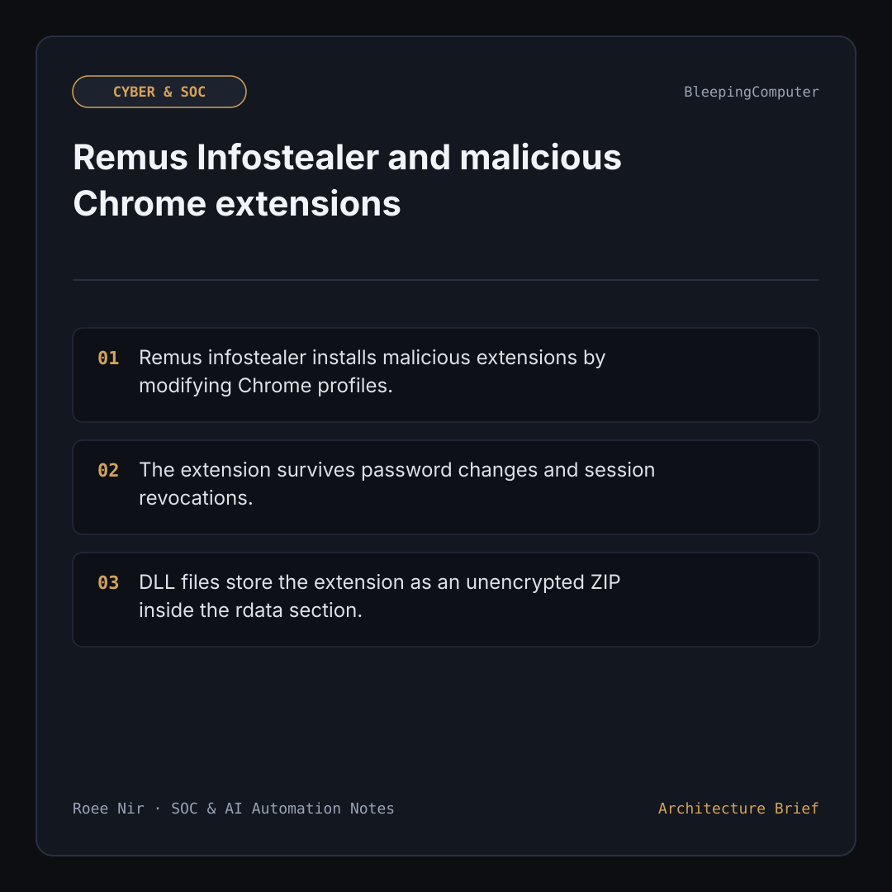

MANUAL PUBLISH PACK · Never auto-posted to LinkedIn without your click.
1. Visual Card (1080x1080)

2. פוסט מוכן + תגובה ראשונה
הבטחת אבטחה בסיסית נשברת ברגע שתוקפים עוקפים את מגבלות הטעינה של דפדפן כרום. ניתוח מעמיק של נוזקת Remus מראה איך קובץ DLL יחיד יכול להחביא בתוכו הרחבת דפדפן זדונית כארכיון ZIP ולשנות את פרופיל המשתמש כך שיפעיל מצב מפתח. המנגנון הזה מאפשר לה לאסוף הודעות אימייל רגישות ולהמשיך לפעול גם אחרי שהקורבן שינה סיסמאות או ניתק סשנים פעילים. בפועל, מה שמוצג כנוזקת גניבת מידע מתקדמת מנצל בסופו של דבר את התנהגות הלגיטימיות לכאורה של הדפדפן עצמו. בתכלס, עבור אנליסטים שמנתחים אירועי קצה, זה דורש מעקב עמוק אחרי שינויים בפרופילי דפדפן והרשאות הרחבה חשודות במערכות הקצה הארגוניות. #EndpointSecurity #MalwareAnalysis #SOC #CyberThreats #BrowserSecurity
תגובה ראשונה (לשמירה על חשיפה אורגנית):
לקריאת המחקר והפירוט הטכני המלא מתוך BleepingComputer: https://www.bleepingcomputer.com/news/security/remus-malware-steals-gmail-messages-via-fake-google-sheets-extension/